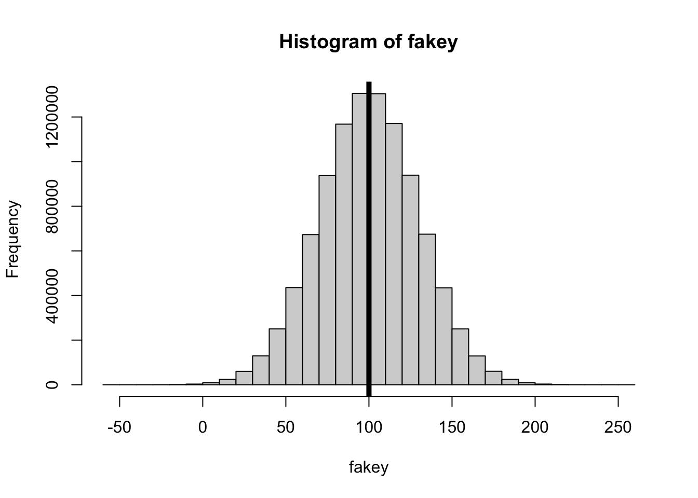
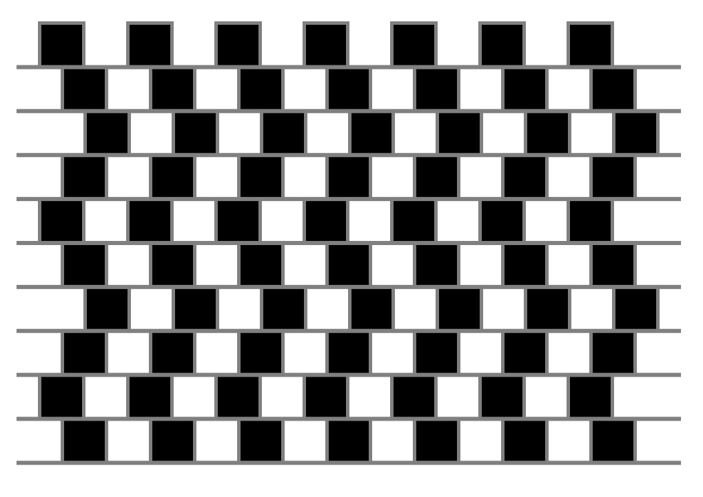
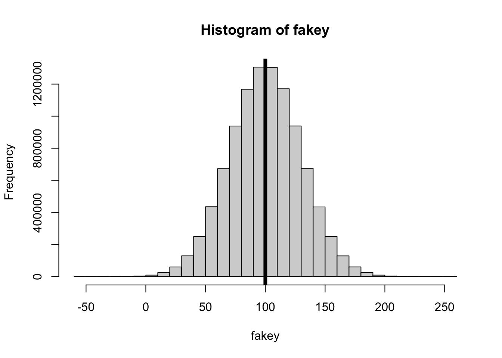
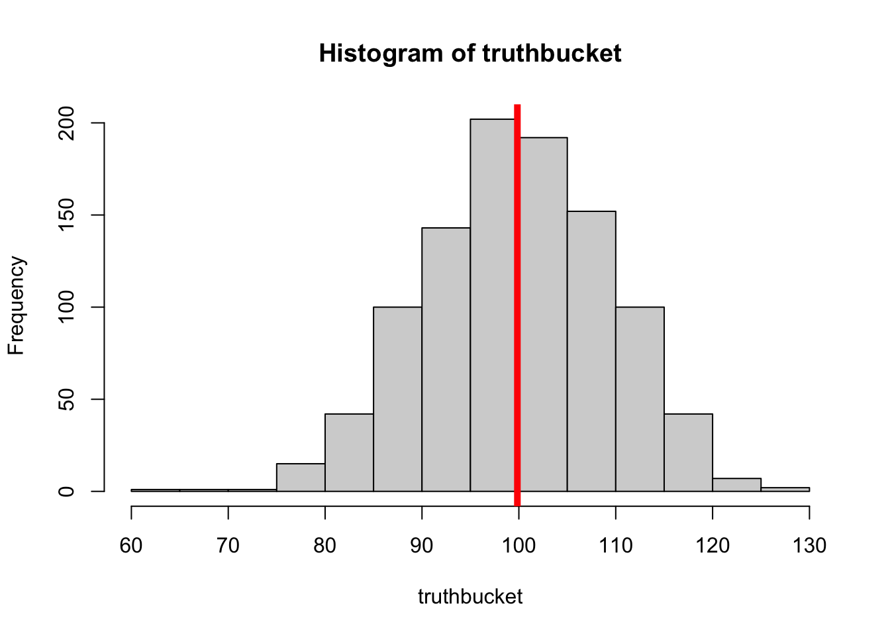
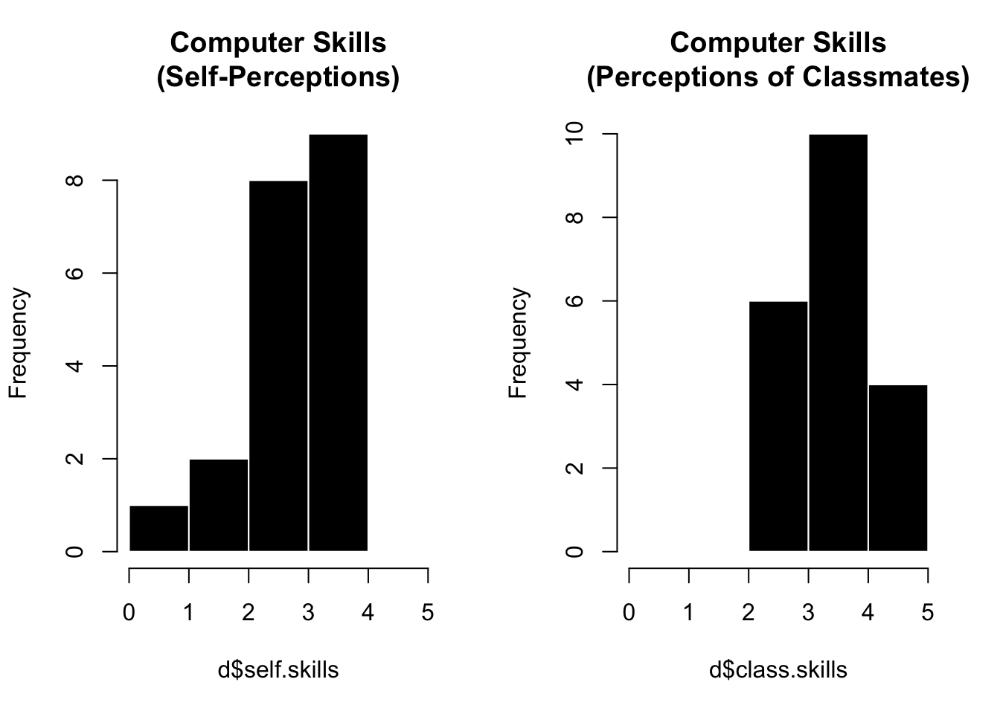
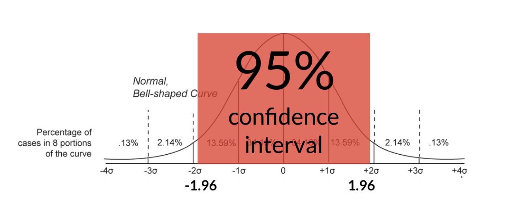
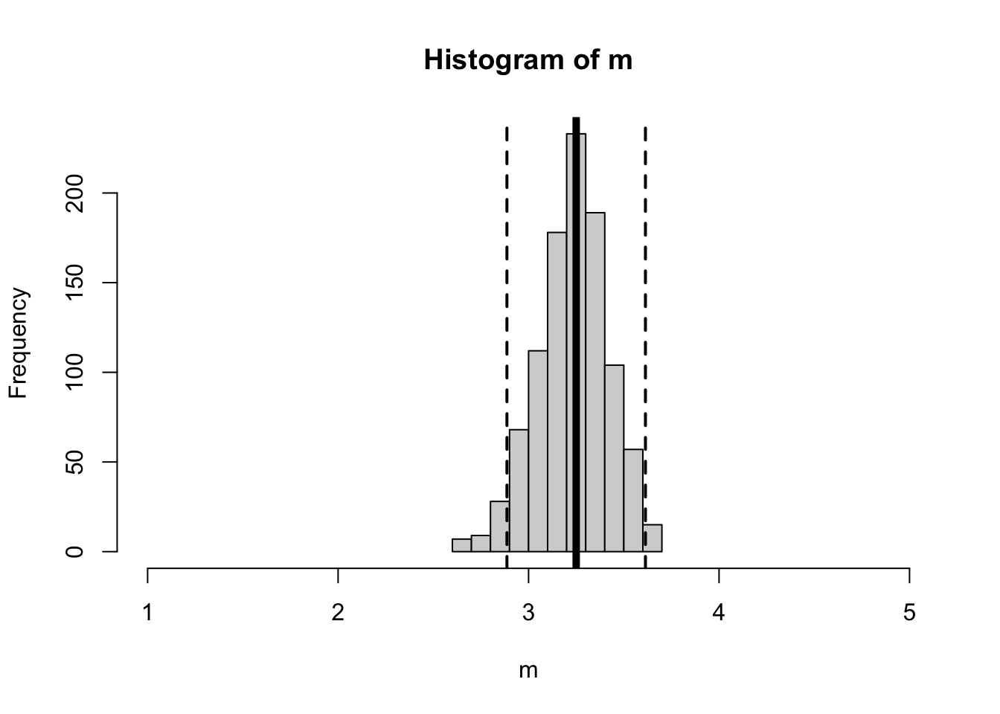
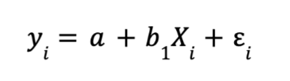
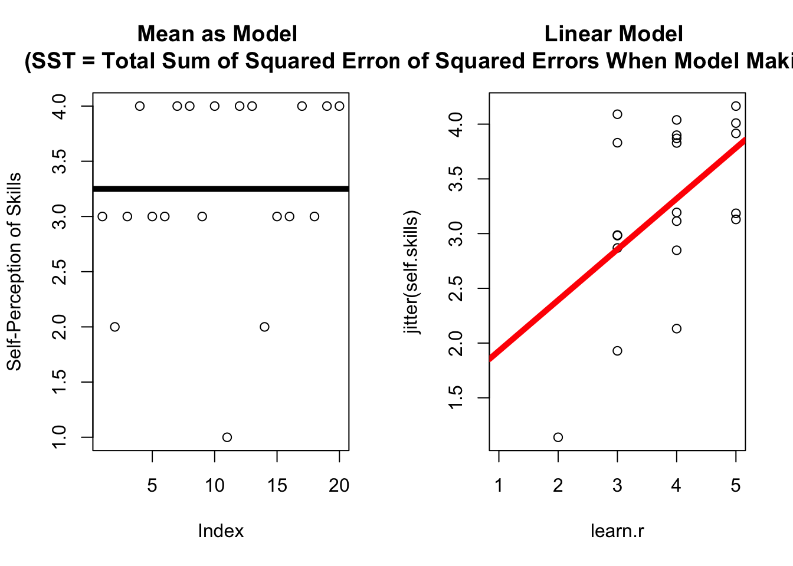

fakey <- rnorm(10000000, mean = 100, sd = 30)
hist(fakey)
abline(v = mean(fakey), lwd = 5)
mean(fakey)[1] 99.98825
Load the onboarding dataset (name this d to follow along with professor code in lecture).
The variable can.forloop asked students whether they could write a for-loop or not.
What is the difference in the number of students who said that YES they could for-loop, compared to the number who said either NO, MAYBE, or had NO IDEA?
Great to find the answer, but try to find a way to get R to calculate this difference using code so you don’t have to manually type in any numbers for the calculation. (Hint : use indexing and the summary function.)
Agenda
Announcements
Lab 3. Just giving everyone credit. Four rooms was wild I don’t like thinking about it.
No Brian Exam. Professor did not know what he was doing but thinks two exams in two weeks is a BAD IDEA.
Mini Exam is in TWO Weeks. Yikes!!
I give you data and a question, you generate a report (in Quarto? Or just screenshot copy/paste for now is fine too.)
Data loading and cleaning.
Scale creating & descriptive statistics.
Linear Models
Bootstrapping
A fun challenge problem worth 1 point.
Ask questions if / when you have them. Don’t struggle on your own. Plenty of time to do that in other spaces!
We will practice / review next week (Lab 5 is a practice exam.)
Think it will be chill, and if not then professor takes the blame, alright?
We defined a fake dataset, called fakey with mean = 100 and sd = 30.

[1] 99.98825We then took 1000 random samples (n = 10) from this fake dataset, calculated a statistic for each of these samples, and then
truthbucket <- array()
for(i in c(1:1000)){
lilfakey <- fakey[sample(1:length(fakey), 10)] # ten random individuals from fakey.
truthbucket[i] <- mean(lilfakey)
}
hist(truthbucket)
abline(v = mean(truthbucket), lwd = 5, col = 'red')
[1] 100.0894[1] 9.689611why are we doing this (taking random samples from this fake dataset?)
what does the distribution of fakey describe?
what does the distribution of truthbucket describe?
what are TWO things you could do in order to decrease the standard deviation of lilfakey?
Okay, let’s work through a real example of using a for-loop to estimate sampling error with real data.
The idea is somewhat impossible (just like raising yourself up by your bootstraps) : we are going to :
Discussion : what’s a problem with this method? why do people do this??
Remember that in the onboarding survey, we saw people rated their own skills as lower than their classmates’ skills.
d <- read.csv("../datasets/Onboarding Data/honor_onboard_FA25.csv", stringsAsFactors = T, na.strings = "")
par(mfrow = c(1,2))
hist(d$self.skills, breaks = c(0:5),
col = 'black', bor = 'white', main = "Computer Skills\n(Self-Perceptions)")
hist(d$class.skills, breaks = c(0:5),
col = 'black', bor = 'white', main = "Computer Skills\n(Perceptions of Classmates)")
But would we expect to observe this same difference in a different sample of students???
Let’s use a for-loop to do this. Here’s the logic bootstrapping to test this.

This prediction of the sample has some error (residual error). We can (and will need to) quantify this error.
m <- array()
for(i in c(1:1000)){
nd <- d[sample(1:nrow(d), nrow(d), replace = T),] # a new sample
m[i] <- mean(nd$self.skills, na.rm = T)
}
mean(d$self.skills, na.rm = T)[1] 3.25[1] 3.25285[1] 1000[1] 0.1782306hist(m, xlim = c(1,5)) # our distribution of sampling estimates
abline(v = c(mean(d$self.skills),
mean(d$self.skills) + 1.96 * sd(m),
mean(d$self.skills) - 1.96 * sd(m)),
lwd = c(5,2,2), # two line widths
lty = c(1,2,2)) # two line types
We can define a linear model to predict a variable from some constant value (1), and the result of that will be the mean, since the mean is our best prediction (minimizes the residual errors) when we don’t have any other information about the variable.
Call:
lm(formula = self.skills ~ 1, data = d)
Coefficients:
(Intercept)
3.25 mod0 <- lm(self.skills ~ 1, data = d) # saving this as a model object
coef(mod0) # looking at the coefficients(Intercept)
3.25 1 2 3 4 5 6 7 8 9 10 11 12 13
-0.25 -1.25 -0.25 0.75 -0.25 -0.25 0.75 0.75 -0.25 0.75 -2.25 0.75 0.75
14 15 16 17 18 19 20
-1.25 -0.25 -0.25 0.75 -0.25 0.75 0.75 Let’s try the same activity, but now we will graph each individual’s self-skill (still on the y-axis) in relationship to their perception of their classmates’ skill (on the x-axis).
The Linear Model :

To define a linear model, we will first use the lm() function to predict some DV from an IV.
Then, we will graph the relationship between these two variables using the plot() function. I’m using jitter() on the DV in order to shift the points a little, since they are overlapping.
Then, I draw a line (defined by the linear model) using the abline() function. I’ve made the line width = 5 and color red to make it POP.
I can look at the coefficients of the model with the coef() function. These coefficients are described by the starting place of the line when the x value is zero (the intercept), and the adjustment we make to Y as the X values increase.
In the graph above, I can see that the dots are not all exactly on the line. My predictions are wrong; this is residual error!
For example, a person who said their R knowledge is a 2 rated their skills as a 1. But this is different from our prediction (the line.)
To calculate this specific prediction, we can plug the person’s R knowledge rating of 1 into our linear model :
self.skill ~ 1.46 + .46 * learn.r
self.skill ~ 1.46 + .46 * 2
self.skill ~ 2.38
So we predict a person who’s learnR score is 2 would have a self-skill of 2.38. But this person is different - we call this a residual score = the difference between their actual score and our prediction = 2 - 2.38 = -.38. The fact this value is negative means the person is below the line.
Fortunately, R does the residual calculations for us, from the linear model object.
1 2 3 4 5 6 7
0.1443299 -1.3195876 -0.3195876 0.2164948 -0.3195876 -0.3195876 0.6804124
8 9 10 11 12 13 14
0.6804124 -0.7835052 0.2164948 -1.3917526 0.6804124 1.1443299 -0.8556701
15 16 17 18 19 20
0.1443299 -0.7835052 0.2164948 0.1443299 0.6804124 1.1443299 [1] 4.440892e-16SSE <- sum(mod1$residuals^2) # so I square them
SSE # the total squared error when I use my model to make predictions.[1] 10.61856## Visualizing Our Errors. (distance between actual scores and the line).
par(mfrow = c(1,2))
plot(d$self.skills,
ylab = "Self-Perception of Skills",
xlab = "Index", main = "Mean as Model \n(SST = Total Sum of Squared Errors)")
abline(h = mean(d$self.skills, na.rm = T), lwd = 5)
plot(jitter(self.skills) ~ learn.r, data = d, main = "Linear Model \n(SSE = Sum of Squared Errors When Model Making Predictions)",
xlim = c(1,5)) # jittered
abline(mod1, lwd = 5, col = 'red')
SST <- sum((d$self.skills - mean(d$self.skills))^2) # defining the total error
SST - SSE # a difference in errors when using the mean vs. our model[1] 3.131443[1] 0.2277413[1] 0.2277413Yes, it’s bootstrapping time!
bucket <- array()
for(i in c(1:1000)){
nd <- d[sample(1:nrow(d), nrow(d), replace = T), ]
modx <- lm(self.skills ~ learn.r, data = nd)
bucket[i] <- coef(modx)[2]
}
hist(bucket) # what do we expect to see?
abline(v = mean(bucket), lwd = 5)
abline(v = mean(bucket) + 1.96*sd(bucket), lwd = 2, lty = 'dashed')
abline(v = mean(bucket) - 1.96*sd(bucket), lwd = 2, lty = 'dashed')
mean(bucket)
sd(bucket)Probably not! But maybe!!!?
[1] "time" "area" "has.laptop" "write.code"
[5] "know.prog" "has.data" "know.r" "can.import"
[9] "can.clean" "can.graph" "can.render" "can.lm"
[13] "can.interp" "can.pvalue" "can.sevsd" "can.95ci"
[17] "can.forloop" "self.skills" "class.skills" "self.excite"
[21] "class.excite" "self.prep" "class.prep" "learn.concept"
[25] "learn.r" "can.science" "should.science" "truth.people"
[29] "not.psychsci" "perf.pred" "noperf.pred" "too.complex"
[33] "epistemology" "consent"